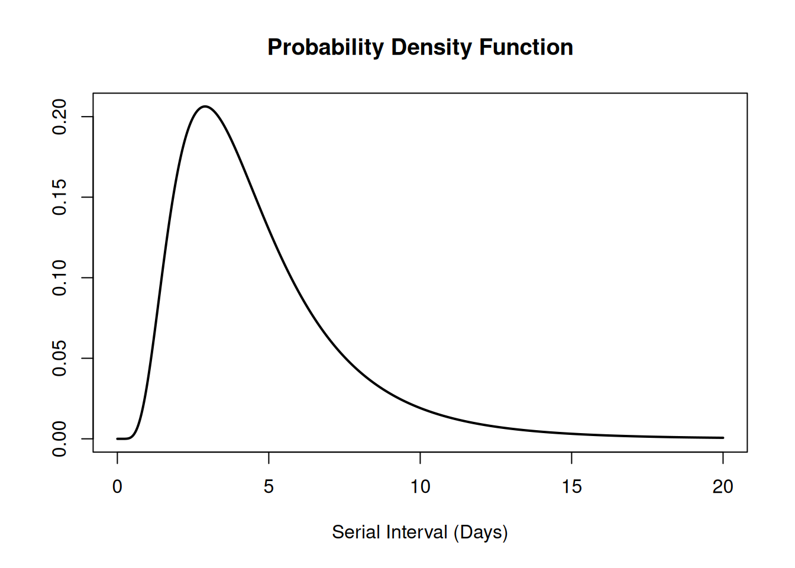
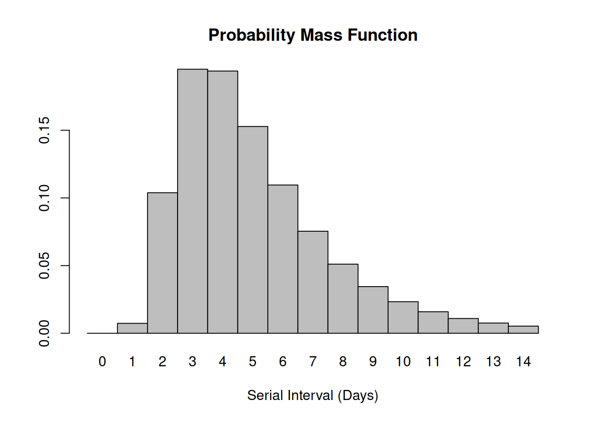
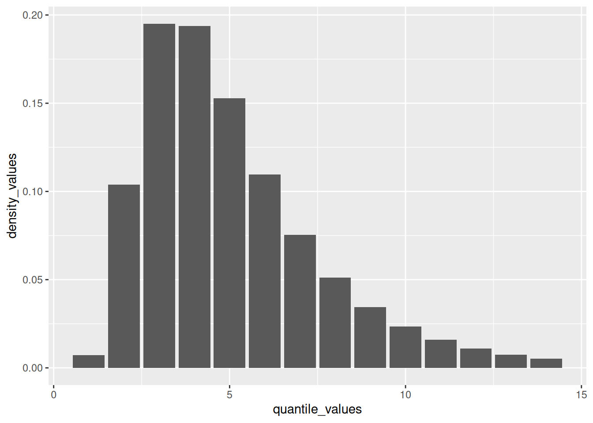
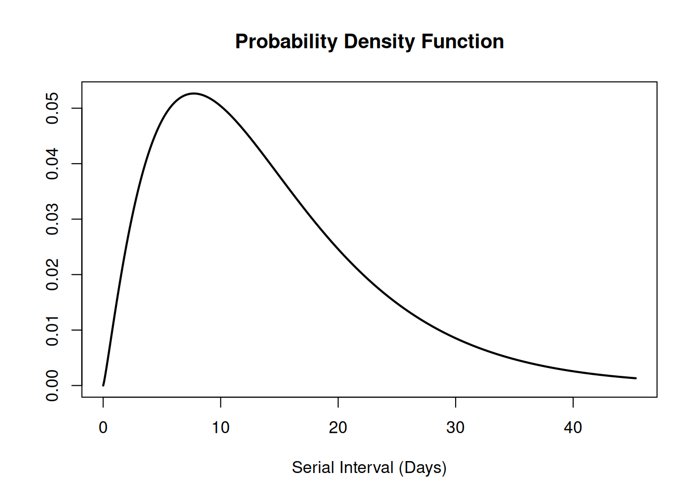
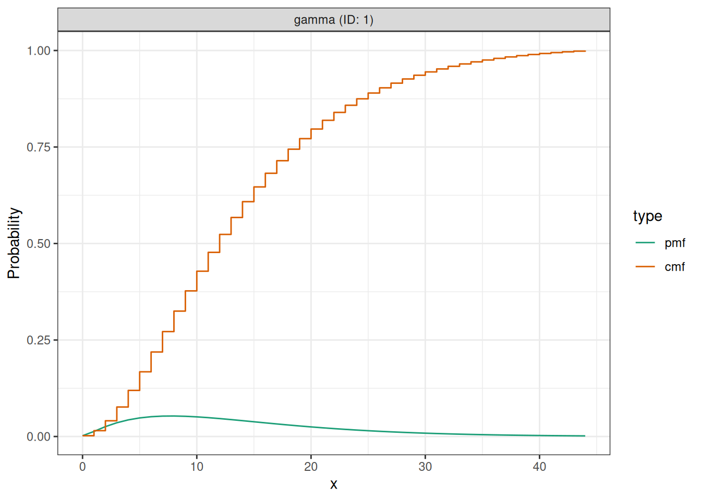
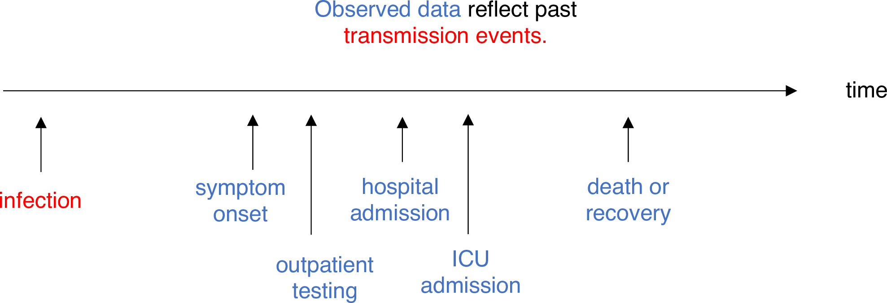
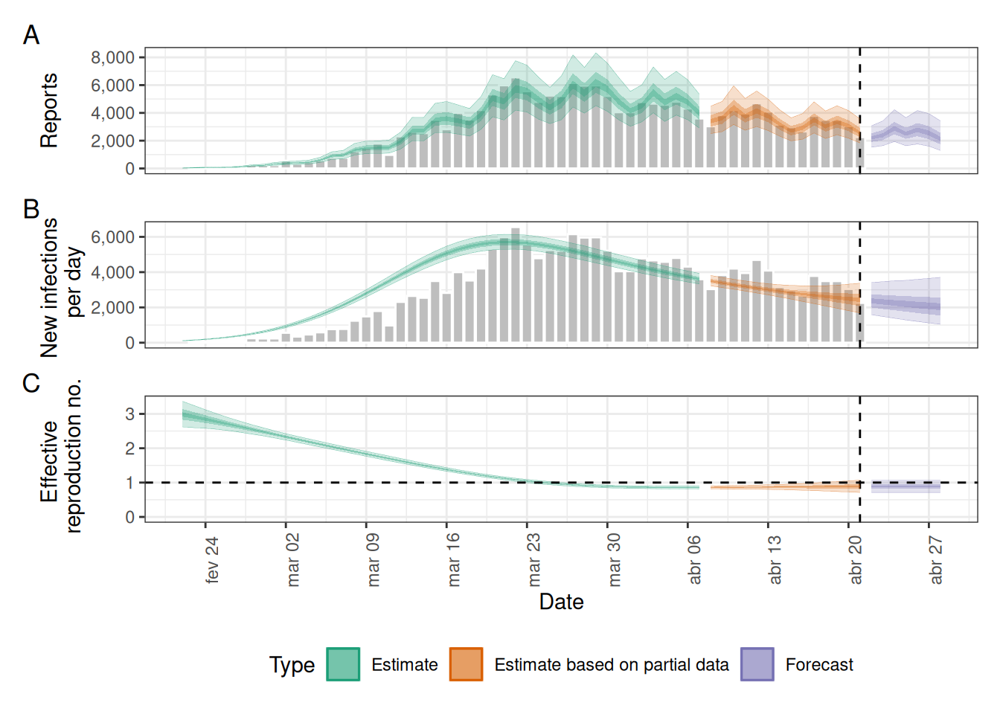
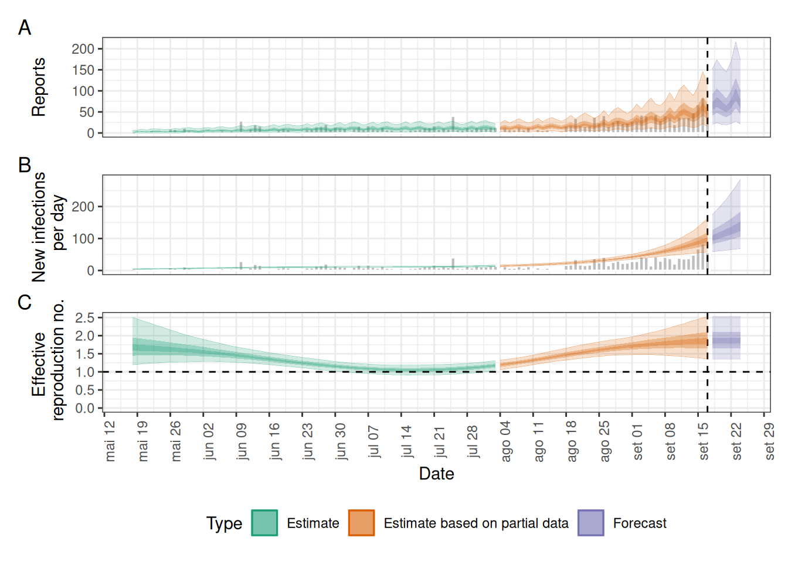
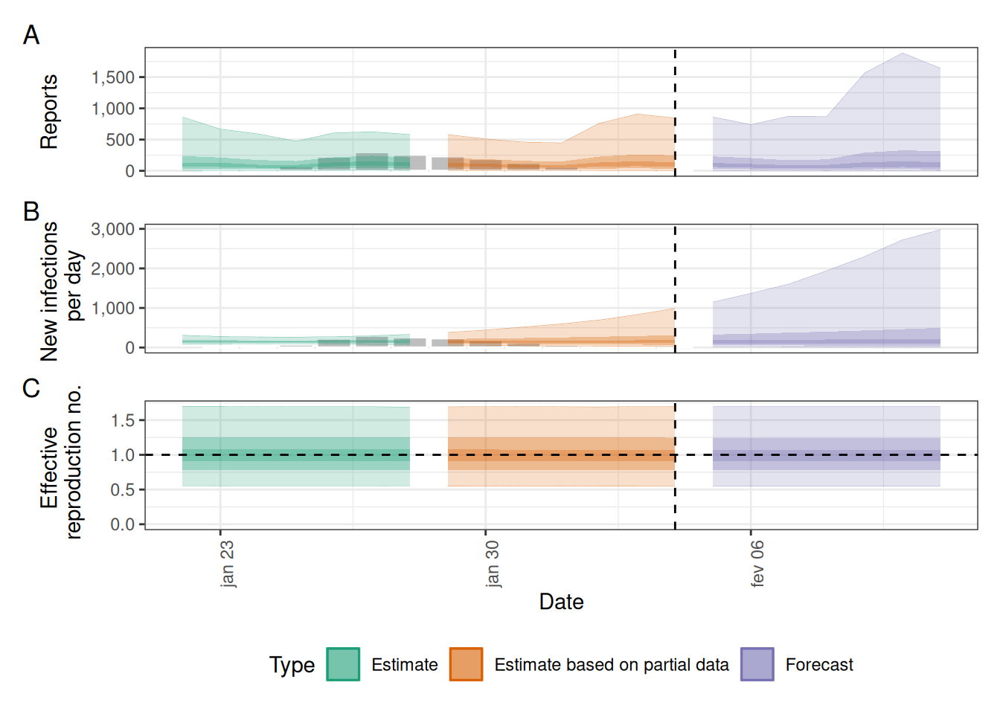

library(epiparameter)
library(EpiNow2)
library(tidyverse)Usar distribuições de atraso na análise
NotaPerguntas
- Como reutilizar atrasos armazenados na biblioteca
{epiparameter}com o meu pipeline de análise existente?
DicaObjetivos
- Usar funções de distribuição com distribuições contínuas e discretas armazenadas como objetos
<epiparameter>. - Converter uma distribuição contínua em discreta com o
{epiparameter}. - Conectar as saídas do
{epiparameter}com as entradas do{EpiNow2}.
ImportantePré-requisitos
Pré-requisitos
- Concluir o tutorial Acessar distribuições epidemiológicas de atraso
- Concluir o tutorial Quantificar a transmissibilidade
Este episódio requer que você tenha familiaridade com:
Ciência de dados: Programação básica em R.
Estatística: Distribuições de probabilidade.
Teoria epidemiológica: Parâmetros epidemiológicos, períodos de tempo, número de reprodução efetivo.
Introdução
Este episódio integrará o conteúdo dos dois episódios anteriores. Vamos começar carregando os pacotes {epiparameter} e {EpiNow2}. Usaremos o pipe %>%, alguns verbos do {dplyr} e o {ggplot2}, então vamos chamar também o pacote {tidyverse}:
Para recapitular, aprendemos que o {epiparameter} nos ajuda a escolher um conjunto específico de parâmetros epidemiológicos da literatura, em vez de copiar/colar à mão:
covid_serialint <-
epiparameter::epiparameter_db(
disease = "covid",
epi_name = "serial",
single_epiparameter = TRUE
)Agora, temos um parâmetro epidemiológico que podemos usar em nossa análise! No entanto, não podemos usar esse objeto diretamente para a análise. Por exemplo, para quantificar a transmissão, frequentemente usamos a distribuição do intervalo serial como uma aproximação do tempo de geração. Para fazer isso, precisamos aplicar funções adicionais a um objeto <epiparameter> para extrair suas estatísticas resumo ou parâmetros da distribuição. Essas saídas podem então ser usadas como entradas para EpiNow2::LogNormal() ou EpiNow2::Gamma(), exatamente como fizemos no episódio anterior.
Neste episódio, usaremos as funções de distribuição fornecidas pelo {epiparameter} para obter valores descritivos como a mediana, o valor máximo (max), percentis ou quantis. Esse conjunto de funções pode operar sobre qualquer distribuição que possa ser incluída em um objeto <epiparameter>: Gama, Weibull, Lognormal, Binomial Negativa, Geométrica e Poisson, que são as mais utilizadas na análise de surtos.
Você precisará dessas saídas nos próximos episódios para alimentar seus pipelines de análise — então vamos garantir que você se sinta confortável trabalhando com elas antes de prosseguir!
NotaChecklist
Os dois-pontos duplos
Os dois-pontos duplos :: no R permitem chamar uma função específica de um pacote sem carregar o pacote inteiro no ambiente atual.
Por exemplo, dplyr::filter(data, condition) usa filter() do pacote {dplyr}.
Isso nos ajuda a lembrar as funções dos pacotes e a evitar conflitos de namespace ao especificar explicitamente a função de qual pacote usar quando múltiplos pacotes têm funções com o mesmo nome.
Funções de distribuição
No R, todas as distribuições estatísticas possuem funções para acessar o seguinte:
density(): função de densidade de probabilidade (PDF),cdf(): função de distribuição acumulada (CDF),quantile(): função de quantil egenerate(): valores aleatórios a partir da distribuição fornecida.
NotaChecklist
Funções para a distribuição normal
Se precisar, leia em detalhes sobre as funções de probabilidade do R para a distribuição normal, cada uma de suas definições e identifique em qual parte de uma distribuição elas se localizam!

Se você consultar ?stats::Distributions, cada tipo de distribuição possui um conjunto exclusivo de funções. No entanto, o {epiparameter} oferece as mesmas quatro funções para acessar cada um dos valores acima para qualquer objeto <epiparameter> que você desejar!
# plote isto para ter uma referência visual
# distribuição contínua
plot(covid_serialint, xlim = c(0, 20))
# o valor da densidade no valor de quantil 10 (dias)
density(covid_serialint, at = 10)[1] 0.01911607# a probabilidade acumulada no valor de quantil 10 (dias)
epiparameter::cdf(covid_serialint, q = 10)[1] 0.9466605# o valor do quantil (dia) a uma probabilidade acumulada de 60%
quantile(covid_serialint, p = 0.6)[1] 4.618906# gerar 10 valores aleatórios (dias) dada
# a família de distribuição e seus parâmetros
epiparameter::generate(covid_serialint, times = 10) [1] 1.852761 2.823021 2.968270 2.781683 2.130811 2.613410 6.387306 2.986456
[9] 4.248183 3.870598
ImportantePara o instrutor
Você pode acessar a documentação de referência (arquivos de ajuda) para essas funções com a notação de três dois-pontos: epiparameter:::
?epiparameter:::density.epiparameter()?epiparameter:::cdf.epiparameter()?epiparameter:::quantile.epiparameter()?epiparameter:::generate.epiparameter()
DicaDesafio
Janela para rastreamento de contatos e o intervalo serial
O intervalo serial é importante na otimização do rastreamento de contatos, pois fornece uma janela de tempo para a contenção da disseminação de uma doença (Fine, 2003). Dependendo do intervalo serial, podemos avaliar a necessidade de aumentar o número de dias considerados para o rastreamento de contatos a fim de incluir mais contatos retrospectivos (Davis et al., 2020).
Com o intervalo serial da COVID-19 (covid_serialint), calcule:
- Quanto a expansão da janela de rastreamento de contatos de 2 para 6 dias antes do início dos sintomas melhoraria a detecção de potenciais infectores?
NotaDica
O intervalo serial é o tempo entre o início dos sintomas em um infector e o início dos sintomas no indivíduo por ele infectado.
Podemos usar a distribuição do intervalo serial para quantificar a probabilidade de detectar um infector a partir de um novo caso. Essa probabilidade pode ser calculada diretamente a partir da distribuição assumida. Consulte a Figura 2 em Davis et al., 2020.
Para um objeto da classe <epiparameter>, a probabilidade acumulada pode ser calculada usando epiparameter::cdf().
NotaSolução
plot(covid_serialint)# calcular a probabilidade de encontrar casos retrospectivos
# com janela de rastreamento de contatos de 2 dias
window_2 <- epiparameter::cdf(covid_serialint, q = 2)
window_2[1] 0.1111729# calcular a probabilidade de encontrar casos retrospectivos
# com janela de rastreamento de contatos de 6 dias
window_6 <- epiparameter::cdf(covid_serialint, q = 6)
window_6[1] 0.7623645# calcular a diferença
window_6 - window_2[1] 0.6511917Dado o intervalo serial da COVID-19:
Um método de rastreamento de contatos que considere contatos até 2 dias antes do início dos sintomas capturará cerca de 11.1% dos casos retrospectivos.
Se esse período for estendido para 6 dias antes do início dos sintomas, isso poderá incluir 76.2% dos contatos retrospectivos.
Cerca de 65.1% a mais de casos retrospectivos poderiam ser capturados ao estender o rastreamento de 2 para 6 dias.
NotaSolução
E se
Se invertermos a pergunta entre dias e probabilidade acumulada para:
- Ao considerar casos secundários, em até quantos dias após o início dos sintomas dos casos primários podemos esperar que ocorra 55% do início dos sintomas secundários?
quantile(covid_serialint, p = 0.55)Uma interpretação poderia ser:
- 55% dos casos secundários terão o início de seus sintomas em cerca de 4,3 dias a partir do início dos sintomas no caso primário.
Discretizar uma distribuição contínua
Estamos chegando mais perto do final! O EpiNow2::LogNormal() ainda precisa de um valor máximo (max).
Uma forma de fazer isso é obter o valor do quantil para o 99º percentil da distribuição ou probabilidade acumulada de 0.99. Para isso, precisamos acessar o conjunto de funções de distribuição para o nosso objeto <epiparameter>.
Podemos usar o conjunto de funções de distribuição para uma distribuição contínua (como acima). No entanto, esses valores serão números contínuos. Podemos discretizar a distribuição contínua armazenada em nosso objeto <epiparameter> para obter valores discretos a partir de uma distribuição contínua.
Quando usamos epiparameter::discretise() na distribuição contínua, obtemos uma distribuição discreta:
covid_serialint_discrete <-
epiparameter::discretise(covid_serialint)
covid_serialint_discreteDisease: COVID-19
Pathogen: SARS-CoV-2
Epi Parameter: serial interval
Study: Nishiura H, Linton N, Akhmetzhanov A (2020). "Serial interval of novel
coronavirus (COVID-19) infections." _International Journal of
Infectious Diseases_. doi:10.1016/j.ijid.2020.02.060
<https://doi.org/10.1016/j.ijid.2020.02.060>.
Distribution: discrete lnorm (days)
Parameters:
meanlog: 1.386
sdlog: 0.568Identificamos essa mudança na linha de saída Distribution: do objeto <epiparameter>. Confira esta linha:
Distribution: discrete lnorm (days)Enquanto para uma distribuição contínua plotamos a Função Densidade de Probabilidade (PDF), para uma distribuição discreta plotamos a Função Massa de Probabilidade (PMF):
# distribuição discreta
plot(covid_serialint_discrete)
Para finalmente obter um valor max, vamos acessar o valor do quantil do 99º percentil ou probabilidade acumulada de 0.99 da distribuição usando a função quantile(), como fizemos acima para a distribuição contínua.
covid_serialint_discrete_max <-
quantile(covid_serialint_discrete, p = 0.99)
DicaDesafio
Duração da quarentena e período de incubação
A distribuição do período de incubação é um atraso útil para avaliar a duração do monitoramento ativo ou da quarentena (Lauer et al., 2020). Da mesma forma, atrasos do início dos sintomas até a recuperação (ou óbito) determinarão a duração necessária da assistência à saúde e do isolamento de casos (Cori et al., 2017).
A biblioteca de parâmetros no pacote {epiparameter} contém os parâmetros relatados por Lauer et al., 2020.
Calcule:
- Quantos dias após a infecção 99% das pessoas que desenvolverão sintomas de COVID-19 de fato manifestam sintomas? Obtenha um número inteiro como resposta.
NotaDica
Qual distribuição de atraso mede o tempo entre a infecção e o início dos sintomas? Para relembrar, você pode ler o Glossário do tutorial.
As funções de probabilidade para distribuições discretas do <epiparameter> são as mesmas que usamos para as contínuas!
NotaSolução
# o atraso da infecção até o início dos sintomas é chamado de período de incubação
# acessar o período de incubação para covid
covid_incubation <-
epiparameter::epiparameter_db(
disease = "covid",
epi_name = "incubation",
author = "lauer",
single_epiparameter = TRUE
)
covid_incubationDisease: COVID-19
Pathogen: SARS-CoV-2
Epi Parameter: incubation period
Study: Lauer S, Grantz K, Bi Q, Jones F, Zheng Q, Meredith H, Azman A, Reich
N, Lessler J (2020). "The Incubation Period of Coronavirus Disease 2019
(COVID-19) From Publicly Reported Confirmed Cases: Estimation and
Application." _Annals of Internal Medicine_. doi:10.7326/M20-0504
<https://doi.org/10.7326/M20-0504>.
Distribution: lnorm (days)
Parameters:
meanlog: 1.629
sdlog: 0.419# para obter um número inteiro como resposta, discretize a distribuição
covid_incubation_discrete <- epiparameter::discretise(covid_incubation)
covid_incubation_discreteDisease: COVID-19
Pathogen: SARS-CoV-2
Epi Parameter: incubation period
Study: Lauer S, Grantz K, Bi Q, Jones F, Zheng Q, Meredith H, Azman A, Reich
N, Lessler J (2020). "The Incubation Period of Coronavirus Disease 2019
(COVID-19) From Publicly Reported Confirmed Cases: Estimation and
Application." _Annals of Internal Medicine_. doi:10.7326/M20-0504
<https://doi.org/10.7326/M20-0504>.
Distribution: discrete lnorm (days)
Parameters:
meanlog: 1.629
sdlog: 0.419# calcular o quantil ou valor no 99º percentil a partir da distribuição
quantile(covid_incubation_discrete, p = 0.99)[1] 1399% daqueles que desenvolvem sintomas de COVID-19 o farão em até 13 dias após a infecção.
Agora, esse resultado é consistente com a duração da quarentena recomendada na prática durante a pandemia de COVID-19?
ImportantePara o instrutor
Como criar um gráfico de distribuição?
A partir de um valor máximo com quantile(), podemos criar uma sequência de valores de quantis como um vetor numérico e calcular os valores de density() para cada um:
# criar uma visualização da distribuição discreta
# a partir de um valor máximo da distribuição
quantile(covid_serialint_discrete, p = 0.99) %>%
# gerar valores de quantis
# como uma sequência para cada número natural
seq(1L, to = ., by = 1L) %>%
# converter vetor numérico em data frame
as_tibble_col(column_name = "quantile_values") %>%
mutate(
# calcular valores de densidade
# para cada quantil na função densidade
density_values =
density(
x = covid_serialint_discrete,
at = quantile_values
)
) %>%
# criar o gráfico
ggplot(
aes(
x = quantile_values,
y = density_values
)
) +
geom_col()
Lembre-se: Em infecções com transmissão pré-sintomática, os intervalos seriais podem ter valores negativos (Nishiura et al., 2020). Quando usamos o intervalo serial para aproximar o tempo de geração, precisamos fazer com que essa distribuição tenha apenas valores positivos!
Conectar o {epiparameter} ao {EpiNow2}
Agora podemos inserir tudo na função EpiNow2::LogNormal()!
- as estatísticas resumo
meanesdda distribuição, - um valor máximo
max, - o nome da
distribution.
Ao usar EpiNow2::LogNormal() para definir uma distribuição log-normal como aquela no objeto covid_serialint, podemos especificar a média e o desvio padrão como parâmetros. Como alternativa, para obter os parâmetros “naturais” de uma distribuição log-normal, podemos converter suas estatísticas resumo em parâmetros da distribuição chamados meanlog e sdlog. Com o {epiparameter}, podemos obter diretamente os parâmetros da distribuição usando epiparameter::get_parameters():
covid_serialint_parameters <-
epiparameter::get_parameters(covid_serialint)Então, temos:
serial_interval_covid <-
EpiNow2::LogNormal(
meanlog = covid_serialint_parameters["meanlog"],
sdlog = covid_serialint_parameters["sdlog"],
max = covid_serialint_discrete_max
)
serial_interval_covid- lognormal distribution (max: 14):
meanlog:
1.4
sdlog:
0.57
ImportantePara o instrutor
Podemos interromper a codificação ao vivo (livecoding) nesta etapa e prosseguir com a parte prática.
DicaDesafio
LogNormal ou Gamma?
Digamos que você precise quantificar a transmissão de um surto de Ebola. Você usará o intervalo serial como uma aproximação do tempo de geração para o {EpiNow2}. O {epiparameter} lhe dará acesso ao parâmetro estimado a partir de surtos históricos.
Siga estas etapas:
- Obtenha acesso à distribuição do
serial intervaldeEbolausando o{epiparameter}. - Acesse uma entrada do estudo com o maior tamanho amostral.- Imprima a saída e leia a descrição.
- Identifique qual distribuição de probabilidade (por exemplo, Gamma, LogNormal, etc.) foi usada pelos autores para modelar o atraso.
- Extraia os parâmetros da distribuição para a distribuição de probabilidade correspondente.
- Calcule um valor máximo exato para a distribuição de atraso (por exemplo, o 99º percentil).
- Insira os parâmetros da distribuição do
<epiparameter>na função de distribuição de probabilidade correspondente no{EpiNow2}(por exemplo,EpiNow2::Gamma(),EpiNow2::LogNormal(), etc.).
NotaDica
Ao conectar {epiparameter} e {EpiNow2}, há uma etapa que é suscetível a erros.
No <epiparameter>, a linha de saída Distribution: determina a função a ser usada no {EpiNow2}:
Escolhemos EpiNow2::Gamma() se no <epiparameter> obtivermos:
Distribution: gamma (days)
Parameters:
shape: 2.188
scale: 6.490Escolhemos EpiNow2::LogNormal() se no <epiparameter> obtivermos:
Distribution: lnorm (days)
Parameters:
meanlog: 1.386
sdlog: 0.568
NotaSolução
# 1. acessar um intervalo serial
ebola_serialint <- epiparameter::epiparameter_db(
disease = "ebola",
epi_name = "serial",
single_epiparameter = TRUE
)ebola_serialintDisease: Ebola Virus Disease
Pathogen: Ebola Virus
Epi Parameter: serial interval
Study: WHO Ebola Response Team, Agua-Agum J, Ariyarajah A, Aylward B, Blake I,
Brennan R, Cori A, Donnelly C, Dorigatti I, Dye C, Eckmanns T, Ferguson
N, Formenty P, Fraser C, Garcia E, Garske T, Hinsley W, Holmes D,
Hugonnet S, Iyengar S, Jombart T, Krishnan R, Meijers S, Mills H,
Mohamed Y, Nedjati-Gilani G, Newton E, Nouvellet P, Pelletier L,
Perkins D, Riley S, Sagrado M, Schnitzler J, Schumacher D, Shah A, Van
Kerkhove M, Varsaneux O, Kannangarage N (2015). "West African Ebola
Epidemic after One Year — Slowing but Not Yet under Control." _The New
England Journal of Medicine_. doi:10.1056/NEJMc1414992
<https://doi.org/10.1056/NEJMc1414992>.
Distribution: gamma (days)
Parameters:
shape: 2.188
scale: 6.490# 2. extrair parâmetros do objeto {epiparameter}
ebola_serialint_params <- epiparameter::get_parameters(ebola_serialint)
ebola_serialint_params shape scale
2.187934 6.490141 # 3. obter um valor máximo
ebola_serialint_max <- ebola_serialint %>%
epiparameter::discretise() %>%
quantile(p = 0.99)
ebola_serialint_max[1] 45# 4. adaptar o {epiparameter} para a interface de distribuição do {EpiNow2}
ebola_generationtime <- EpiNow2::Gamma(
shape = ebola_serialint_params["shape"],
scale = ebola_serialint_params["scale"],
max = ebola_serialint_max
)
ebola_generationtime- gamma distribution (max: 45):
shape:
2.2
rate:
0.15# plotar o objeto da classe `epiparameter`
plot(ebola_serialint)
# plotar o objeto da classe `dist_spec` do {EpiNow2}
plot(ebola_generationtime)
Plotar distribuições a partir da interface do {EpiNow2} sempre produz uma saída discretizada. A partir da legenda: PMF significa Função Massa de Probabilidade (Probability Mass Function) e CMF significa Função Massa Acumulada (Cumulative Mass Function).
Ajustar para atrasos de notificação
Estimar o \(R_t\) requer dados sobre o número diário de novas infecções. Devido a defasagens no desenvolvimento de cargas virais detectáveis, início dos sintomas, busca por atendimento e notificação, esses números não estão prontamente disponíveis. Todas as observações refletem eventos de transmissão ocorridos em algum momento no passado. Em outras palavras, se \(d\) é o atraso da infecção até a observação, então observações no tempo \(t\) orientam \(R_{t−d}\), e não \(R_t\). (Gostic et al., 2020)

A distribuição de atraso pode ser inferida conjuntamente com os momentos subjacentes de infecção ou estimada como a soma da distribuição do período de incubação e da distribuição dos atrasos do início dos sintomas até a observação a partir de dados de linelist (atraso de notificação). Para o {EpiNow2}, podemos especificar essas duas distribuições de atraso complementares no argumento delays.
NotaNo Brasil: medir o atraso de notificação
Nas bases do SINAN e do SIVEP-Gripe, o atraso de notificação pode ser medido diretamente pela diferença entre a data de primeiros sintomas e a data de notificação ou de digitação. Como as últimas semanas ainda não foram consolidadas, esse atraso aparece como censura à direita — e é exatamente o que este episódio ensina a representar como distribuição. Fonte: SINAN — instrucional para download de microdados.

DicaDesafio
Usar um período de incubação para COVID-19 para estimar o Rt
Estime o número de reprodução variável no tempo para os primeiros 60 dias do conjunto de dados example_confirmed do {EpiNow2}. Acesse um período de incubação para COVID-19 do {epiparameter} para usá-lo como um atraso de notificação.
NotaDica
Use o último cálculo de epinow() utilizando o argumento delays e a função auxiliar delay_opts().
O argumento delays e a função auxiliar delay_opts() são análogos ao argumento generation_time e à função auxiliar generation_time_opts().
epinow_estimates <- EpiNow2::epinow(
# casos
data = example_confirmed[1:60],
# atrasos
generation_time = EpiNow2::generation_time_opts(covid_serial_interval),
delays = EpiNow2::delay_opts(covid_incubation_time)
)
NotaSolução
# tempo de geração --------------------------------------------------------
# obter o intervalo serial da covid
covid_serialint <-
epiparameter::epiparameter_db(
disease = "covid",
epi_name = "serial",
single_epiparameter = TRUE
)
# adaptar epiparameter para epinow2
covid_serialint_discrete_max <- covid_serialint %>%
epiparameter::discretise() %>%
quantile(p = 0.99)
covid_serialint_parameters <-
epiparameter::get_parameters(covid_serialint)
covid_serial_interval <-
EpiNow2::LogNormal(
meanlog = covid_serialint_parameters["meanlog"],
sdlog = covid_serialint_parameters["sdlog"],
max = covid_serialint_discrete_max
)
# tempo de incubação ------------------------------------------------------
# obter o período de incubação da covid
covid_incubation <- epiparameter::epiparameter_db(
disease = "covid",
epi_name = "incubation",
single_epiparameter = TRUE
)
# adaptar epiparameter para epinow2
covid_incubation_discrete_max <- covid_incubation %>%
epiparameter::discretise() %>%
quantile(p = 0.99)
covid_incubation_parameters <-
epiparameter::get_parameters(covid_incubation)
covid_incubation_time <-
EpiNow2::LogNormal(
meanlog = covid_incubation_parameters["meanlog"],
sdlog = covid_incubation_parameters["sdlog"],
max = covid_incubation_discrete_max
)
# epinow ------------------------------------------------------------------
# Definir 4 núcleos para serem usados em computações paralelas
withr::local_options(list(mc.cores = parallel::detectCores() - 1))
# executar epinow
epinow_estimates_cgi <- EpiNow2::epinow(
# casos
data = example_confirmed[1:60],
# atrasos
generation_time = EpiNow2::generation_time_opts(covid_serial_interval),
delays = EpiNow2::delay_opts(covid_incubation_time)
)
base::plot(epinow_estimates_cgi)
Tente complementar o argumento delays com um atraso de notificação como o objeto reporting_delay_fixed do episódio anterior.
NotaDiscussão
O quanto mudou?
Compare três execuções de EpiNow2::epinow():
- Usar apenas o tempo de geração
- Adicionar o tempo de incubação
- Adicionar o tempo de incubação e o atraso de notificação
Após adicionar todos os atrasos, discuta:
- A tendência do ajuste do modelo na seção “Estimate” muda?
- A incerteza mudou?
- Como você explicaria ou interpretaria qualquer uma dessas mudanças?
Compare todas as figuras do {EpiNow2} geradas nas três execuções.
Desafios
NotaUma dica de autocompletar código
Se escrevermos [] ao lado do objeto covid_serialint_parameters[], dentro de [] podemos usar a tecla Tab ↹ para o recurso de autocompletar código
Isso dá acesso rápido a covid_serialint_parameters["meanlog"] e covid_serialint_parameters["sdlog"].
Convidamos você a experimentar isso nos blocos de código e no console do R!
DicaDesafio
Número de reprodução efetivo do Ebola ajustado por atrasos de notificação
Baixe e leia o conjunto de dados de Ebola:
- Estime o número de reprodução efetivo usando o
{EpiNow2} - Ajuste a estimativa pelos atrasos de notificação disponíveis no
{epiparameter} - Por que você escolheu esse parâmetro?
NotaDica
Para calcular o \(R_t\) usando o {EpiNow2}, precisamos de:
datade incidência agregada, com casos confirmados por dia, e- A distribuição do tempo de geração (
generation). - Opcionalmente, distribuições de atrasos de notificação (
delays) quando disponíveis (por exemplo, período de incubação).
Para obter distribuições de atraso usando o {epiparameter}, podemos usar funções como:
epiparameter::epiparameter_db()epiparameter::parameter_tbl()discretise()quantile()
NotaSolução
# ler dados
# ex.: se o caminho para o arquivo for data/raw-data/ebola_cases.csv então:
ebola_confirmed <-
read_csv(here::here("data", "raw-data", "ebola_cases.csv")) %>%
incidence2::incidence(
date_index = "date",
counts = "confirm",
count_values_to = "confirm",
date_names_to = "date",
complete_dates = TRUE
) %>%
dplyr::select(-count_variable)
# listar distribuições
epiparameter::epiparameter_db(disease = "ebola") %>%
epiparameter::parameter_tbl()# tempo de geração --------------------------------------------------------
# selecionar uma distribuição para o tempo de geração
ebola_serial <- epiparameter::epiparameter_db(
disease = "ebola",
epi_name = "serial",
single_epiparameter = TRUE
)
# adaptar epiparameter para epinow2
ebola_serial_discrete <- epiparameter::discretise(ebola_serial)
serial_interval_ebola <-
EpiNow2::Gamma(
mean = ebola_serial$summary_stats$mean,
sd = ebola_serial$summary_stats$sd,
max = quantile(ebola_serial_discrete, p = 0.99)
)
# tempo de incubação ------------------------------------------------------
# selecionar uma distribuição para o atraso do período de incubação
ebola_incubation <- epiparameter::epiparameter_db(
disease = "ebola",
epi_name = "incubation",
single_epiparameter = TRUE
)
# adaptar epiparameter para epinow2
ebola_incubation_discrete <- epiparameter::discretise(ebola_incubation)
incubation_period_ebola <-
EpiNow2::Gamma(
mean = ebola_incubation$summary_stats$mean,
sd = ebola_incubation$summary_stats$sd,
max = quantile(ebola_incubation_discrete, p = 0.99)
)
# epinow ------------------------------------------------------------------
# executar epinow
epinow_estimates_egi <- EpiNow2::epinow(
# casos
data = ebola_confirmed,
# atrasos
generation_time = EpiNow2::generation_time_opts(serial_interval_ebola),
delays = EpiNow2::delay_opts(incubation_period_ebola)
)
plot(epinow_estimates_egi)
DicaDesafio
O que fazer com distribuições Weibull?
Use o conjunto de dados influenza_england_1978_school do pacote {outbreaks} para calcular o número de reprodução efetivo usando o {EpiNow2}, ajustando pelos atrasos de notificação disponíveis no {epiparameter}.
NotaDica
EpiNow2::NonParametric() aceita Funções Massa de Probabilidade (PMF) de qualquer família de distribuição. Leia o guia de referência sobre Distribuições de probabilidade.
NotaSolução
# Quais parâmetros estão disponíveis para Influenza?
epiparameter::epiparameter_db(disease = "influenza") %>%
epiparameter::parameter_tbl() %>%
count(epi_name)# Parameter table:
# A data frame: 3 × 2
epi_name n
<chr> <int>
1 generation time 1
2 incubation period 15
3 serial interval 1# tempo de geração --------------------------------------------------------
# Ler o tempo de geração
influenza_generation <-
epiparameter::epiparameter_db(
disease = "influenza",
epi_name = "generation"
)
influenza_generationDisease: Influenza
Pathogen: Influenza-A-H1N1
Epi Parameter: generation time
Study: Lessler J, Reich N, Cummings D, New York City Department of Health and
Mental Hygiene Swine Influenza Investigation Team (2009). "Outbreak of
2009 Pandemic Influenza A (H1N1) at a New York City School." _The New
England Journal of Medicine_. doi:10.1056/NEJMoa0906089
<https://doi.org/10.1056/NEJMoa0906089>.
Distribution: weibull (days)
Parameters:
shape: 2.360
scale: 3.180# O EpiNow2 aceita atualmente Gamma ou LogNormal
# outros podem passar a função PMF
influenza_generation_discrete <-
epiparameter::discretise(influenza_generation)
influenza_generation_max <-
quantile(influenza_generation_discrete, p = 0.99)
influenza_generation_pmf <-
density(
influenza_generation_discrete,
at = 0:influenza_generation_max
)
influenza_generation_pmf[1] 0.00000000 0.06312336 0.22134988 0.29721220 0.23896828 0.12485164 0.04309454# EpiNow2::NonParametric() também pode aceitar os valores da PMF
generation_time_influenza <-
EpiNow2::NonParametric(
pmf = influenza_generation_pmf
)
# período de incubação ----------------------------------------------------
# Ler o período de incubação
influenza_incubation <-
epiparameter::epiparameter_db(
disease = "influenza",
epi_name = "incubation",
single_epiparameter = TRUE
)
# Discretizar o período de incubação
influenza_incubation_discrete <-
epiparameter::discretise(influenza_incubation)
influenza_incubation_max <-
quantile(influenza_incubation_discrete, p = 0.99)
influenza_incubation_pmf <-
density(
influenza_incubation_discrete,
at = 0:influenza_incubation_max
)
influenza_incubation_pmf[1] 0.00000000 0.05749151 0.16687705 0.22443092 0.21507632 0.16104546 0.09746609
[8] 0.04841928# EpiNow2::NonParametric() também pode aceitar os valores da PMF
incubation_time_influenza <-
EpiNow2::NonParametric(
pmf = influenza_incubation_pmf
)
# epinow ------------------------------------------------------------------
# Ler os dados
influenza_cleaned <-
outbreaks::influenza_england_1978_school %>%
select(date, confirm = in_bed)
# Executar epinow()
epinow_estimates_igi <- EpiNow2::epinow(
# casos
data = influenza_cleaned,
# atrasos
generation_time = EpiNow2::generation_time_opts(generation_time_influenza),
delays = EpiNow2::delay_opts(incubation_time_influenza)
)
plot(epinow_estimates_igi)
Próximos passos
NotaPara se aprofundar
Como obter parâmetros da distribuição a partir de distribuições estatísticas?
Como obter a média e o desvio padrão a partir de um tempo de geração com apenas parâmetros da distribuição, mas sem estatísticas resumo como mean ou sd para EpiNow2::Gamma() ou EpiNow2::LogNormal()?
Consulte a vinheta do {epiparameter} sobre extração e conversão de parâmetros e seus casos de uso!
NotaPara se aprofundar
Como estimar distribuições de atraso para a Doença X?
Consulte este excelente tutorial sobre a estimativa do intervalo serial e do período de incubação da Doença X levando em conta a censura por meio de inferência bayesiana com pacotes como {rstan} e {coarseDataTools}.
- Tutorial em inglês: https://rpubs.com/tracelac/diseaseX- Tutorial em espanhol: https://epiverse-trace.github.io/epimodelac/EnfermedadX.html
Depois, após obter seus valores estimados, você pode criar manualmente seus próprios objetos da classe <epiparameter> com epiparameter::epiparameter()! Dê uma olhada no seu guia de referência sobre “Criar um objeto <epiparameter>”!
Por fim, confira os pacotes R mais recentes {epidist} e {primarycensored}, que fornecem métodos para lidar com os principais desafios na estimativa de distribuições, incluindo truncamento, censura intervalar e vieses dinâmicos.
NotaPontos-chave
- Use funções de distribuição com objetos
<epiparameter>para obter estatísticas resumo e parâmetros informativos para intervenções de saúde pública, como a Janela para rastreamento de contatos e a Duração da quarentena. - Use
discretise()para converter distribuições de atraso contínuas em discretas. - Use o
{epiparameter}para obter atrasos de notificação necessários nas estimativas de transmissibilidade.